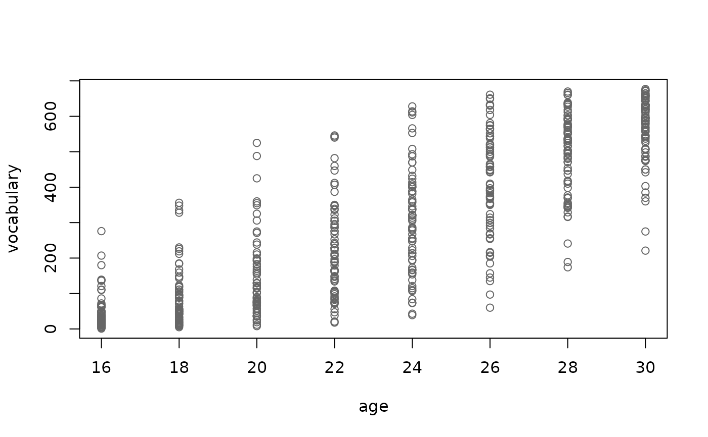

Productive vocabulary on a 680-word parental checklist, every two months from 16 to 30 months, for 80 children. Growth is S-shaped, and children who hear more speech start their vocabulary spurt earlier. About 10% of sessions are missing.
Format
A tibble with 572 rows and 4 columns:
- child
Child ID,
C01toC80.- input
Adult words per hour heard at home (one value per child).
- age
Age in months.
- vocabulary
Number of words produced, out of 680.
Details
True model: vocabulary is binomial out of 680 with probability
plogis((age - mid) / 2.8), where mid = 25.2 - 2 * log2(input / 1200) plus a by-child deviation (SD 2.6 months), and session-level noise
on the logit scale (SD 0.15). Doubling the input moves the spurt 2 months
earlier. Children average about 300 words at 24 months.
References
Fenson, L., Marchman, V. A., Thal, D. J., Dale, P. S., Reznick, J. S. & Bates, E. (2007). MacArthur-Bates Communicative Development Inventories: User's guide and technical manual (2nd ed.). Baltimore: Brookes.
Frank, M. C., Braginsky, M., Yurovsky, D. & Marchman, V. A. (2017). Wordbank: An open repository for developmental vocabulary data. Journal of Child Language, 44(3), 677-694. doi:10.1017/S0305000916000209
Examples
plot(vocabulary ~ age, data = vocabulary_growth, col = grey(0.4))

if (requireNamespace("lme4", quietly = TRUE)) {
vocabulary_growth$session <- seq_len(nrow(vocabulary_growth))
m <- lme4::glmer(cbind(vocabulary, 680 - vocabulary) ~ I(age - 24) +
I(log2(input / 1200)) + (1 | child) + (1 | session),
data = vocabulary_growth, family = binomial)
b <- lme4::fixef(m)
c(spurt_at_1200_words = 24 - b[[1]] / b[[2]], months_per_doubling = b[[3]] / b[[2]])
}
#> spurt_at_1200_words months_per_doubling
#> 24.603348 1.663168